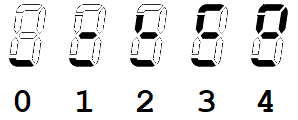
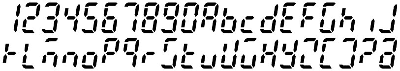

IC-900 Remote Controller Clone Project, Part II
Updated 07/22/2022
← Back to the Projects page... ← Back to Part I ... The Conclusion →|
Welcome to Part II… Contrary to the tone at the conclusion of Part I, the software development has progressed without interruption and just a scant 4 weeks on, the progress is very good. All basic radio functions have been coded and pass basic tests. This means that the unit can function as a multiband radio with the main features implemented: Frequency adjustment, duplex selection, TX offset adjustment, CTCSS tone on/off and adjustment, Volume/Squelch adjustment, HILO power control, rev/check feature, TS (freq step select), and band selection. Progress has been rather quick owing to previous work (see this discussion about the begninnings of my earlier attempts at building a "radio" using ICOM UX modules). Still, progress has not been without issue or pain. First, I still had some hardware gremlins to address. These didn't show up in the initial validation, but became obvious once I started exercising the user interface. Chief among these were the solder shorts: one on the ICOM key/display board, and one on the flex-cable connection to the new ARM board. Additionally, a failure of the SIN comm connection was a bit surprising. Here, the data separateor circuit was copied almost verbatim from the ICOM design, and it was tested good! However, when attempting to use the system I discovered that the data didn't look at all good on an o'scope (thus, no surprise that it wasn't working). There was a significant "RC" component to the waveform. I finally worked out that I needed a load resistor on the power/data signal to get the data separator to work correctly. Curious. After considering the issue, I realized that I had tested the data separator in parallel with the working IC-900 controller that I had borrowed - making it apparent that the borrowed controller loaded the signal in such a way that my design did not. This load turned out to be in the form of the Iq(dc) of the LM7806 voltage ragulator used on the ICOM design. For my design, I used a switching regulator circuit which has a substantially lower Iq(dc). The "loaded" I(ac/dc) was in the form of a high-frequency pulse train used by the switching regulator. This conspired to remove the Iq(dc) of the original ICOM circuit. A typical value of Iq(dc) for the LM78xx series is about 5 mA and a 2.2K resistor accross the 11(ish) volts at the input to the data separator provided that load rather nicely. Speaking of the switching regulator, another issue had me replacing a couple of those parts because I missed a subtlety of the IC's enable pin. Most regulators I encounter allow the enable to be tied to Vin to force the part to be on all the time. With the part I used in this design, there is a 6V max limit on the voltage applied to the enable. Adding a series current-limit resistor was an easy fix, but I was confounded: I had used this part in another project and connecting the enable directly to Vin hadn't expressed this issue. Delayed learning... Drat! Lastly, I found that I needed to consider adding a coin-cell battery to maintain the ARM's HIB RAM. When I originally started down this design path, I was rather pleased with myself at planning to use the Tiva EEPROM to maintain the radio channel memories. A vast improvement over designs typical of this vintage as it elliminates the need for a battery and all the mainenance headaches that come with it over time. However, I forgot about the fact that not only are there channel memories, but the overall state of the radio needs to be remembered during power-off cycles. This includes many variables that are highly transient and would not typically be maintained in EEPROM because they can be changed often (such as settings for VFO, volume, squelch, etc...). One option is to monitor the supply voltage and produce an interrupt when power is removed. The idea is that the hold-up capacitance on the regulators offers a measure of time delay between the loss of primary power, and the voltage decay at the output of the 3.3V LDO. If this delay is long enough, and repeatable, it could be used to store "transient" data to EEPROM. Otherwise, a battery will be needed. The solution will end up being very close to that, only different.How NOT to write real-time code… Up to this point, I had been focused on hardware and low-level software. Once the hardware was no longer an issue, I had to switch gears and start thinking more about the user interface (UI). I had a template to work from in the form of the original controller operation. However, I wasn't allowing that to limit what was possible. But in the begining, I was mostly concerned just with the basics. Things like, get the S-meter to work and display the frequency. Then, get the radio part to work at the indicated frequency. Receive first, then transmit, and on from there. The work I'd done on the low-level code paid off as I found almost no issues with the basic I/O between the UI and the radio. This allowed the focus to remain on the UI. Rather quickly, I had a basic T/R radio. Soon after, I could adjust the frequency and CTCSS tone. Before I knew it, I was left with only the memory function as the last major feature, plus some minor dangling threads. But let's not skip too far ahead just yet. To start out, I had to come up with a UI that worked and wasn't too easy to break with software changes. Since I do bare-metal design, I have to take extra measures to ensure that there are no "burrs" in the code. These are "loops" where the code has to wait for something to happen, or a time delay to transpire, before continuing on. Such coding structures bog-down the code execution and can often hang the system because the thing that is being waited on needs processing to happen. The result is that one must "un-roll" the logic and slice it into "events" that can be trapped and acted upon (quickly). A ho-hum RTOS (Real Time Operating System) does all that for you, but in the bare-metal world, you have to think in "slices" - all of the algorithms have to be broken into steps that can be executed in stages. There are a couple of ways that I accomplish this. One is to use the concept of state machines, and another technique is to use "change" flags where execution is triggered when a data value changes. To make a simple state machine, a "state" variable is created and a corresponding state diagram is sketched out. For each "event", a state name is assigned (these become numbers in the code, but we can assign names to the numbers to help the code make sense). The state variable feeds into a switch() statement which directs the program flow to the identified "event". The code at that event runs in sequence with only the briefest of delays (ideally) before exiting the switch() statement. If conditions warrent, the "event" will modify the state variable to point to another event on the state diagram. In this way, one event can direct flow to another event to accomplish the task at hand. Along the way, various resources, such as GPIO or timers, are also employed to regulate the flow and direction of the code. As long as the switch() statement is executed with some regularity, the state machine will progress through the state diagram over time and as external inputs dictate. Other switch() state machines using other state variables can then all be run in sequence to accomplish multiple tasks in what appears to be parallel. This is essentially what an RTOS does, but you don't have to think about it as much with the RTOS. For simple systems such as the one at hand, the thought overhead can be managed, which can reduce the system overhead required vs. that required to run an RTOS. There are a lot of RTOS options out there. You can even write your own (I once wrote a simple one for the 6502, many moons ago). I'd argue that I essentially write an RTOS into my bare-metal designs. However, in doing so I have to re-invent the wheel for each new project. Most of my new designs are generally evolutions of something I've done in the past, so I end up re-using code often enough that the coding efficiency is not poor enough to scrap all of my past work and jump onto the RTOS train. While it generally works for me, I'm not advocating it for all. I think it is important to excercise bare-metal skills when one is developing for real-time microcontrollers, but on the whole, using some kind of COTS RTOS is going to be more efficient. Still, if you are game, check out the CCS6 project and source file github repo.Five-pound bucket - 10 pounds of , er, "stuff"… The primary issue with this application is actually one that an RTOS can't really help with on its own. The issue regards resource management. In this case, the LCD display. The problem revolves around the fact that there are a limited number of pixels in the viewing area and too many "items" that need to be displayed. As a result, some of the display fields have to be multiplexed from different data sources. For example, there are two bargraphs in the display area, one for main S/RF and one for sub S/RF. However, a bargraph would be helpful to display volume and squelch. To cover all these bases, we'd need 6 bargraphs in total. Since there are only two, we have to timeshare the bargraphs which means that there has to a method of selecting which resource is to be displayed. With only 7 bar-segments, I also wanted more resolution (the volume and squelch have a range of 0 - 34), so I decided to use the memory number digit to get a fine resolution of volume/squelch changes. By implication this means that the memory digit resource must also be multiplexed. All in all, I'd end up spending most of my time managing the multiplex operations. With the myriad of features that I needed and wanted, this has become a bit of a challenge. Still, having been through this before, I at least knew what I was up against. The resulting code is reasonable, tho not perfect. Considering it from an outsider's perspective, the code would likely be onerous to modify because there are lots of opportunities for something changed at point "A" to break something over at point "W". It is my best effort, and I've generally done an OK job at traking down the breaks, but it still could stand with some improvement. Code comments are my only countermeasure at this point, so I am not likely to re-attempt the design unless some other influence intervenes. To try and keep everything balanced, I organized the software into "processes" that are more-or-less focused on a particular resource or activity. These process functions are called in-order from an idle point in the command-line serial character polling function. As long as none of the processes enter any sort of long wait loop, the tasks all appear to essentially execute simultaneously. This is actually something that also must be kept in mind - the "appear" part in particular. All of the radio communications are handled in radio.c, and all of the User Interface (UI) operations are in lcd.c (the rest of the source files pertain mostly towards the interrupt and initialization resources). The UI is divided between inputs and outputs, with the inputs from the user and from the radio driving operations to the display and the radio. Many paths cross which is part of why there are many options for breaking things. However, there are no real options since the LCD space is fixed and finite.
 The KEY Point… Figure 3 illustrates the IC-900 control unit. Of particular interest here are the keypress locations (buttons). These are the primary user input media for the system. The list below describes the button uses. Some of the button meanings have been usurped here to improve the operation of the radio. For example, on the IC-900, the band switch is accomplsihed by entering the SET mode, then moving to the BAND sub-menu, then selecting the band. Compared with the IC-901 (which has a dedicated BAND button), this is a lot of effort in order to switch bands. Since there is an MR and a VFO button, I decided to use MR to toggle between VFO and memory modes, and use the VFO button as the "BAND" button.
The Same, only more better… Overall, the operation of the controller is similar to that of the ICOM version. However, there are a couple of innovations that are worthy of note. The first is rather ho-hum, but useful to a degree. I re-implemented (and modified) my 7-segment alphanumeric character set (first developed for my GPS Wall Clock -- and no, I'm not the first to attempt this) to allow for more informative error messages as well as for text memory names. There are only 6 characters available in the frequency display space (I don't plan to implement a "sliding" message scheme which would allow for more characters) but this will accomodate any known call-sign, so it can at least be used to accociate the repeater call with a particular memory. In addition, there are a few characters that are non-ideal, but are the best one can manage with only 7 segments. The image below illustrates the character map for the numbers and letters. Preference is given to lower case characters. Knowing this helps resolve a couple of conflicts for "u" (u) and "U" (V). The other characters of questionable merit are "K", "m", "w" and "x". See what you think:  Where to next… Memory and SET mode features are next. I would like to get some operational testing performed first, however. The code development has been rather hot-n-heavy up to now, and there are a number of details that have been run roughshod over. I need to populate some additional modules (I currently only have two attached) and spend some time tuning around and talking to folks. I also need to think about the tone and digital squelch modes. The digital squelch module (UT-28) that ICOM offered looks to be un-obtainium. In addition, it is proprietary, so it would only work with other ICOM radios that were likewise equipped. This simplifies things to a great extent as I can actually think about focusing on making my own decoder for this radio. There is a CML part (CMX138) that can do CTCSS and DPL encode/decode functions. With a bit of effort, one could make a custom board that could be used to accomplish both modes. In addition, the RDU code would have to interface with the new option board and also interact with it in operation to accomplish the decoding task. A terminal interface also needs to be written. The framework is already in place, but the commands need to be filled in. Something that can operate over the wired comm port at first, then move to the Bluetooth port. For the wired port, a maintainence approach is envisioned. Memory upload/download and some debug commands. For the Bluetooth port, real-time control will also be desired. This will allow something like my HM-133 dtmf interface to control the radio with modern convieniences like direct frequency entry and other amenities. |